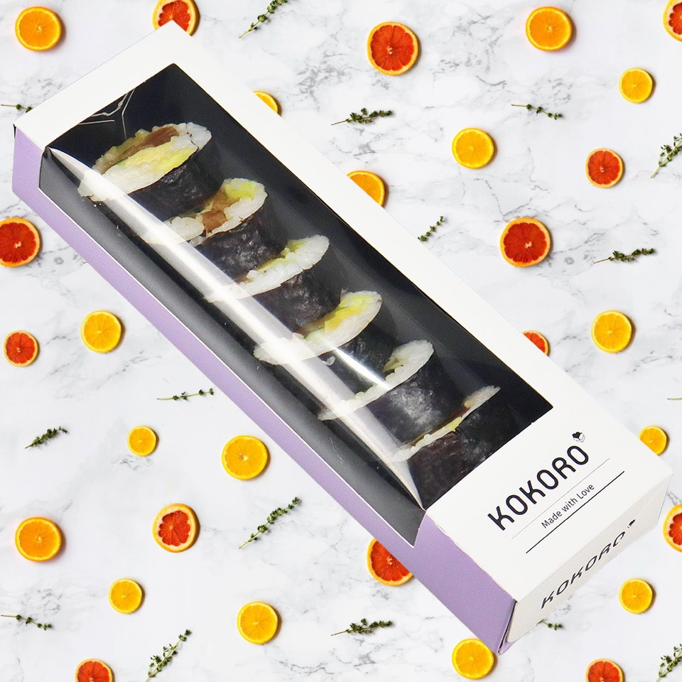

Large top window over the product
The window creates a broad product view. Film gauge, clarity, anti-fog need, adhesive, window edge, ventilation, recycling route, and contact conditions must be specified rather than inferred.
Sushi packaging · GS-0659772
This photograph shows a long rectangular takeaway box with a large clear top window and printed paperboard surround. It is presented as a feasibility reference only: food-contact surfaces, window film, grease and moisture exposure, fogging, temperature, ventilation, shelf time, and destination rules require a complete application review.

Evidence boundary: This reference is not a validated core product or a food-contact approval. No food-grade, direct-contact, anti-fog, greaseproof, leakproof, freezer, chilled-chain, microwave, barrier, shelf-life, or recyclability claim is made without the exact material documentation and application tests.
What this reference shows
The visible window and elongated form are useful for discussing product visibility and a linear pack-out. The photograph cannot verify film composition, coating, direct-contact status, leak resistance, condensation performance, closure retention, or suitability for chilled delivery.
The window creates a broad product view. Film gauge, clarity, anti-fog need, adhesive, window edge, ventilation, recycling route, and contact conditions must be specified rather than inferred.
The reference accommodates a row-style presentation. Internal length, width, depth, divider or tray, headspace, product weight, and closure geometry must follow the actual menu item.
White and pale-purple panels keep attention on the window. Board, coating, grease exposure, print process, scuffing, required copy, and labeling zones remain project decisions.
Configuration decisions
A project-ready quotation needs the physical product, artwork, production quantity, packing method, destination, and acceptance criteria. These decisions turn a useful image into a controlled specification.
Approval route
A feasibility sample must be packed with the real food under expected temperature and time conditions. Review window fogging, grease and moisture, closure, ventilation, deformation, stacking, leakage, and label adhesion with the responsible food-safety and packaging teams.
Continue the specification
Use the parent service to compare construction choices, then review the related components or approval guide that support this specific reference.
Quote reference GS-0659772
The quote form will carry this reference into your brief. Add the real product or pack size, estimated quantity, destination, target date, packing method, and artwork so Kevin can identify the next technical questions.